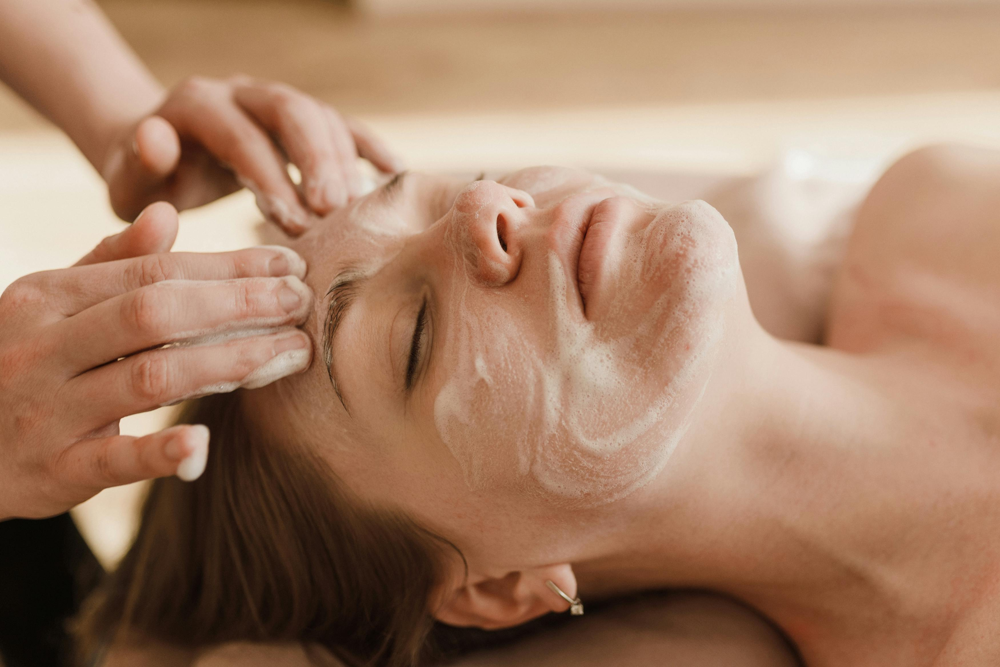

Nossos Protocolos

Limpeza de Pele
Remoção de impurezas, extração cuidadosa e hidratação intensa adaptada ao seu tipo de pele.
Drenagem Linfática
Movimentos técnicos e suaves focados na redução do inchaço corporal e relaxamento total.

Argiloterapia
Um protocolo personalizado com o poder das argilas para as necessidades da sua pele.